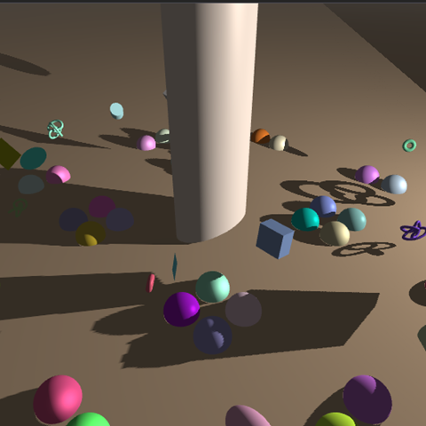

3D Graphics
The CS250 HW - Shadow Mapping project was an assignment for the CS250 Computer Graphics II class at DigiPen. The goal was to implement shadow mapping using a perspective light camera, construct depth and RGBA8 textures, manage render targets via framebuffers, and apply shadow logic through shaders. The demo allows real-time exploration and tweaking through ImGui and visualizes both the light's frustum and the resulting shadow map, including exponential fog and gamma correction.
The most challenging part of this project was dealing with shadows behind the light source. It was important to properly handle the shadow space w value and the depth comparison condition in the textureProj() function while implementing the DoShadowBehindLight function. It was also a challenge to control the **Exponential Fog** so that it was not applied too aggressively. This made me understand the concept of view space distance-based attenuation and the relationship between shader coordinate space.